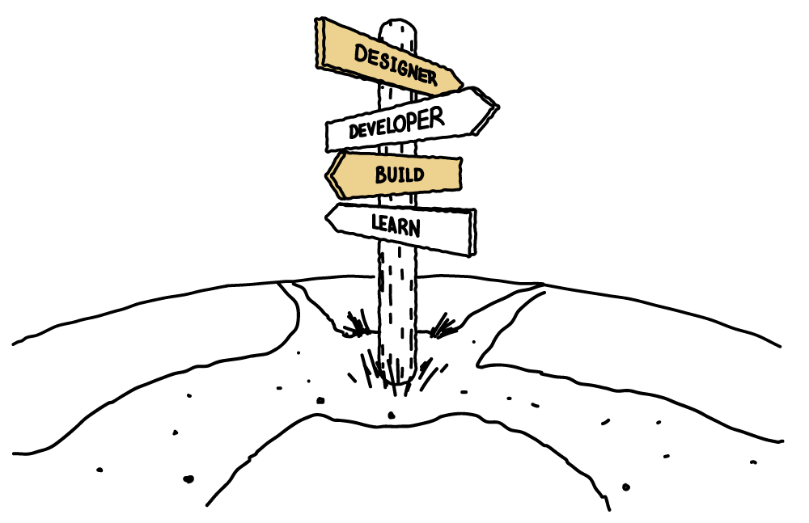

Error
Sorry, we can’t find the page you’re looking for
The page might have been deleted, moved or it might not exist. Please check you’ve typed the right address.
Error code: 404

The .gov.au means it’s official
Australian Government websites always use a .gov.au domain. Before sharing sensitive information online, make sure you’re on a .gov.au site by inspecting your browser’s address (or 'location') bar.
This site is secure.
The https:// ensures that you are connecting to the official website and that any information you provide is encrypted and transmitted securely.
The page might have been deleted, moved or it might not exist. Please check you’ve typed the right address.
Error code: 404